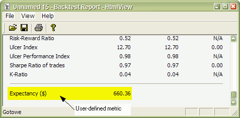
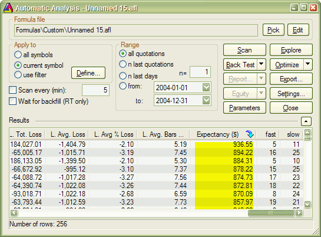
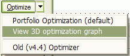
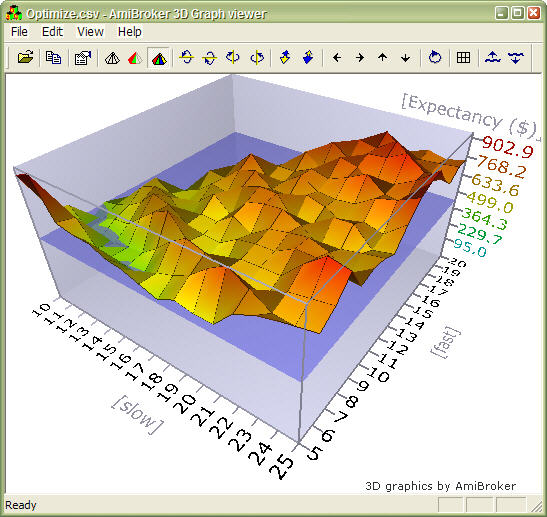
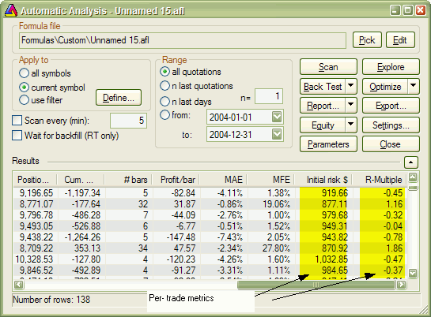

One of the new additions in 4.67.x/4.68.x BETA
is portfolio backtester programming interface providing full control of 2nd
phase of portfolio backtest. This allows a multitude of applications including, but not limited to:
Technical reference of new interface is available here, in this chapter we will just focus on some practical examples.
Adding user-defined metrics
Example 1
Let's start with the easiest application: in the very first example I will show you how to add user-defined metric to portfolio report and optimization result list.
In the first step we will add Expectancy to backtest and optimization report. There is some discussion about how expectancy should be calculated but the easiest formula for it is:
Expectancy ($) = %Winners * AvgProfit - %Losers * AvgLoss
or (the other way of calculating the same)
Expectancy ($) = (TotalProfit - TotalLoss) / NumberOfTrades = NetProfit / NumberOfTrades
Let us start with this simple formulation. With this approach expectancy simply tells us expected profit per trade in dollars. The custom backtest formula that implements this user-defined metric looks as follows:
/*
First we need to enable custom backtest procedure and
** tell AmiBroker to use current formula
*/
SetCustomBacktestProc("");
/* Now custom-backtest procedure follows */
if( Status("action")
== actionPortfolio )
{
bo = GetBacktesterObject();
bo.Backtest(); // run default backtest procedure
st = bo.GetPerformanceStats(0); //
get stats for all trades
// Expectancy calculation (the
easy way)
// %Win * AvgProfit - %Los *
AvgLos
// note that because AvgLos is
already negative
// in AmiBroker so we are adding
values instead of subtracting them
// we could also use simpler formula
NetProfit/NumberOfTrades
// but for the purpose of
illustration we are using more complex one :-)
expectancy = st.GetValue("WinnersAvgProfit")*st.GetValue("WinnersPercent")/100 +
st.GetValue("LosersAvgLoss")*st.GetValue("LosersPercent")/100;
// Here we add custom metric to
backtest report
bo.AddCustomMetric( "Expectancy ($)",
expectancy );
}
// your trading system here
fast = Optimize("fast", 12, 5, 20, 1 );
slow = Optimize("slow", 26, 10, 25, 1 );
Buy=Cross(MACD(fast,slow),Signal(fast,slow));
Sell=Cross(Signal(fast,slow),MACD(fast,slow));
First we need to tell AmiBroker to use custom backtest formula instead of built-in one. We are doing so by calling SetCustomBacktestProc. The first parameter defines the path to the custom backtest formula (which can be stored in some external file, independent from actual trading system). If we provide an empty string there, we are telling AmiBroker to use current formula (the same that is used for trading system).
In the next line, we have an "if" statement that ensures the custom backtest formula is executed if the analysis engine is in the actionPortfolio (2nd phase of portfolio backtest) stage. This is important as the formula is executed in both scanning phase (when trading signals are generated) and in actual portfolio backtest phase. The "if" statement allows us to enter the custom backtest procedure part only when the analysis engine is in the actual backtesting phase.
In the next line, we obtain access to the Backtester programming interface by calling the GetBacktesterObject function. This returns a Backtester object that is used to access all functionality of the new interface (for more details on available objects, see: http://www.amibroker.com/docs/ab401.html)
Later, we obtain access to built-in metrics by calling the GetPerformanceStats method of the Backtester object. This method returns a Statistics object that allows us to access any built-in metric by calling the GetValue method.
As a next step, we calculate the expectancy value from built-in metrics retrieved using the GetValue method. For the list of metrics supported by the GetValue method, please check: http://www.amibroker.com/docs/ab401.html
In the final step, we simply add our custom metric to the report by calling the AddCustomMetric function of the Backtester object. The first parameter is the name of the metric, the second is the value.
After the "if"-statement implementing our custom backtest procedure, usual trading system rules follow.
Now, when you run a backtest and click the Report button in the Automatic Analysis window, you will see your custom metric added at the bottom of the statistics page:

The user-defined metric also appears in the Optimization result list:

When you click the custom metric column, the optimization results will be sorted by your own metric, and you will be able to display a 3D chart of your user-defined metric plotted against optimization variables.


Example 2
Some people point out that this simple method of calculating expectancy works well only with constant position size. Otherwise, with variable position sizing and/or compounding, larger trades weigh more than smaller trades and this leads to misleading expectancy values. To calculate such a statistic, one needs to iterate through trades, summing up profits per $100 unit, and dividing this sum by the number of trades. Appropriate formula follows:
/* First we need to enable
custom backtest procedure and
** tell AmiBroker to use current formula
*/
SetCustomBacktestProc("");
/* Now custom-backtest procedure follows */
if( Status("action")
== actionPortfolio )
{
bo = GetBacktesterObject();
bo.Backtest(); // run default backtest procedure
SumProfitPer100Inv = 0;
NumTrades = 0;
// iterate through closed trades
first
for(
trade = bo.GetFirstTrade(); trade; trade = bo.GetNextTrade() )
{
// here we sum
up profit per $100 invested
SumProfitPer100Inv = SumProfitPer100Inv + trade.GetPercentProfit();
NumTrades++;
}
// iterate through eventually still open positions
for(
trade = bo.GetFirstOpenPos(); trade; trade = bo.GetNextOpenPos() )
{
SumProfitPer100Inv = SumProfitPer100Inv + trade.GetPercentProfit();
NumTrades++;
}
expectancy2 = SumProfitPer100Inv / NumTrades;
bo.AddCustomMetric( "Expectancy (per $100 inv.)",
expectancy2 );
}
// your trading system here
fast = Optimize("fast", 12, 5, 20, 1 );
slow = Optimize("slow", 26, 10, 25, 1 );
Buy=Cross(MACD(fast,slow),Signal(fast,slow));
Sell=Cross(Signal(fast,slow),MACD(fast,slow));
The only difference between this and the previous formula is that we do not use built-in metrics to calculate our own expectancy figure. Instead, we sum up all percentage profits of each trade (which are equivalent to dollar profits from a $100 unit investment) and, at the end, divide the sum by the number of trades. Summing up is done inside the "for" loop. The GetFirstTrade/GetNextTrade function pair of the Backtester object allows us to step through the list of closed trades. We use two loops (second loop uses GetFirstOpenPos/GetNextOpenPos) because there may be some open positions left at the end of the backtest. If we wanted to include only closed trades, then we could remove the second "for" loop.
After running this code, we find out that expectancy calculated this way, even adjusted to initial equity (by multiplying by the factor InitialEquity/$100), is smaller than the expectancy calculated in the first example. This shows that the "easy" method of expectancy calculation (from example 1) may lead to overly optimistic results.
Example 3
Some Van Tharp followers prefer yet a slightly different "twist" on the expectancy measure. They express expectancy in terms of expected profit per "unit of risk". The profit is then expressed in terms of R-multiples, where 1R is defined as the amount risked per trade. The amount risked is the maximum amount of money you can lose, and most often, it is set by the maximum loss stop (or trailing stop). According to Tharp, the easiest way to calculate expectancy is simply to add up all your R-multiples, net them out by subtracting the negative R-multiples from the positive ones, and then divide by the number of trades. This gives you your expectancy per trade.
This is very similar to the approach presented in Example 2, but for the calculations, we do not use the value of the trade, but rather the risk per trade. The risk depends on the stop we use in our trading system. For simplicity, in this example, we have used a 10% max. loss stop. In this example, we also add per-trade metrics for a better illustration of how R-multiples are calculated. Per-trade metrics appear in each row of the trade list in the backtest results.

The formula that implements this kind of expectancy measure follows:
/*
First we need to enable custom backtest procedure and
** tell AmiBroker to use current formula
*/
SetCustomBacktestProc("");
MaxLossPercentStop = 10; //
10% max. loss stop
/* Now custom-backtest procedure follows */
if( Status("action")
== actionPortfolio )
{
bo = GetBacktesterObject();
bo.Backtest(1); //
run default backtest procedure
SumProfitPerRisk = 0;
NumTrades = 0;
// iterate through closed trades
first
for(
trade = bo.GetFirstTrade(); trade; trade = bo.GetNextTrade() )
{
// risk is calculated
as the maximum value we can loose per trade
// in this example
we are using max. loss stop
// it means
we can not lose more than (MaxLoss%) of invested amount
// hence ris
Risk = ( MaxLossPercentStop / 100 )
* trade.GetEntryValue();
RMultiple = trade.GetProfit()/Risk;
trade.AddCustomMetric("Initial risk $",
Risk );
trade.AddCustomMetric("R-Multiple",
RMultiple );
SumProfitPerRisk = SumProfitPerRisk + RMultiple;
NumTrades++;
}
expectancy3 = SumProfitPerRisk / NumTrades;
bo.AddCustomMetric( "Expectancy (per risk)",
expectancy3 );
bo.ListTrades();
}
// your trading system here
ApplyStop( stopTypeLoss, stopModePercent,
MaxLossPercentStop );
fast = Optimize("fast", 12, 5, 20, 1 );
slow = Optimize("slow", 26, 10, 25, 1 );
Buy=Cross(MACD(fast,slow),Signal(fast,slow));
Sell=Cross(Signal(fast,slow),MACD(fast,slow));
The code is basically very similar to Example 2. There are only a few differences. First is that we call the Backtest method with the NoTradeList parameter set to 1. This way, we disable default trade listing, so we can add custom per-trade metrics and list trades later by calling the ListTrades method. Later, we iterate through trades and calculate risk based on trade entry value and the amount of max. loss stop used. The RMultiple is then calculated as trade profit divided by the amount risked per trade. Both risk and R-multiple are then added as custom per-trade metrics (note that we are calling the AddCustomMetric method of Trade object here). Later on, we do the remaining calculations. At the end of the custom backtest procedure, we are adding a custom backtest metric (this time calling the AddCustomMetric method of the Backtester object), and after that, we trigger listing of the trades using the ListTrades method. For simplicity, we ignore any open positions that may have been left at the end of the analysis period. The only change to the trading system itself was the addition of a maximum loss stop (ApplyStop line).
Conclusion
A new portfolio backtester programming interface provides the ability to add user-defined statistics of any kind, allowing the user to move the analysis of backtesting results to a completely new level.